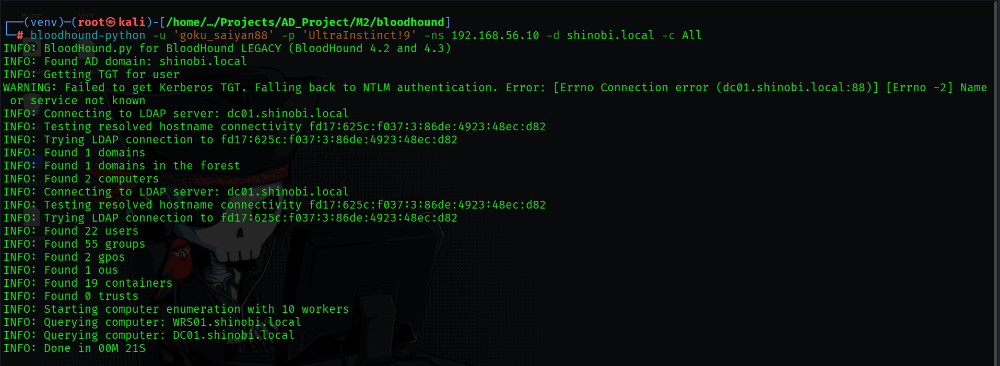
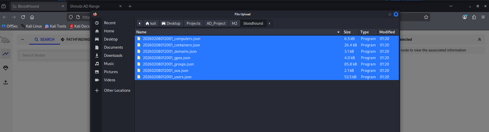

Post-Exploitation Enumeration (BloodHound)
BloodHound was utilized to visualize Active Directory relationships using graph theory. This allows for the identification of complex attack paths, hidden administrative relationships, and privilege escalation vectors that are invisible to standard CLI tools like net.exe.
Objective: Stealthily gather domain structure data (Users, Groups, Computers, Sessions) from a Linux attacker machine without joining the domain.
bloodhound-pythonbloodhound-python -u 'goku_saiyan88'
-p 'UltraInstinct!9'
-ns 192.168.56.10 -d shinobi.local -c All
dc01.shinobi.local).
Objective: Load the collected JSON data into the Neo4j database for visualization.

Objective: Identify the "Keys to the Kingdom"—users who are members of the Domain Admins group.
Cypher
MATCH p = (t:Group)<-[:MemberOf*1..]-(a)
WHERE (a:User or a:Computer) and t.objectid ENDS WITH '-512'
RETURN p
Administrator, madara_uchiha91, gojo_satoru69, and itachi_anbu01 as members of Domain Admins.Objective: Determine the most efficient "Kill Chain" to compromise the entire domain starting from any node.
Shortest Paths to High Value TargetsAddKeyCredentialLink, GenericAll, and WriteDacl.naruto_uzumaki07) could lead to Domain Admin compromise via a chain of delegation and ACL abuse.Objective: Locate accounts that are vulnerable to Kerberoasting (Module 4) to extract service ticket hashes for offline cracking.
List all Kerberoastable Users (Accounts with Service Principal Names set).Cypher
MATCH (u:User) WHERE u.hasspn=true AND u.enabled=true RETURN u
svc_deathnote, svc_sharingan, and svc_saiyan.Detection Note (Blue Team Perspective)
svc_backup) and monitoring it for "Shortest Path" queries or TGS requests can alert defenders to active reconnaissance.{kind=link}
{kind=link}
{kind=link}
{kind=link}
{kind=link}